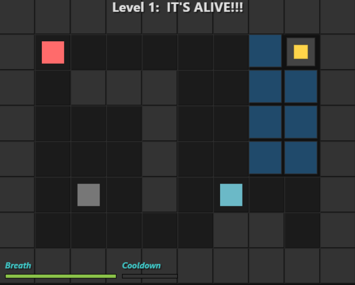
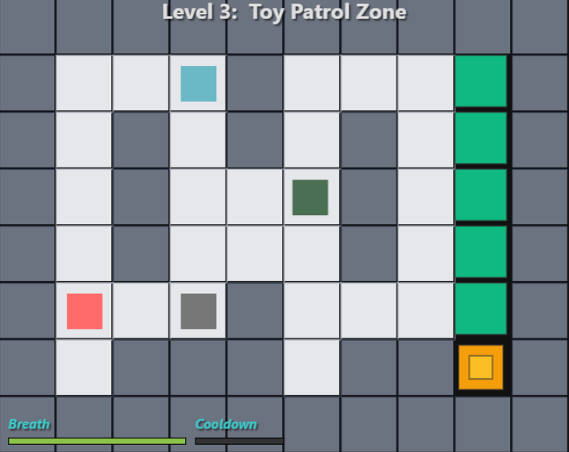

Toy Path
A retro puzzle game where your breath is everything.


About This Project
Toy Path is a minimalist HTML5 puzzle game where the player’s only power is holding their breath.
Bridges drop, toys move, and the environment reacts only while time stands still — forcing the player to think before they breathe.
Developed in 12 days between Spark deliveries and job searching, Toy Path explores game design patterns such as Resource-Limited Movement, Safe Zones, Environmental Timing Puzzle, and Indirect Control.
What began as a thought experiment in the Glean Cadence Lab—“what if toys only moved when you held your breath?”—became my first completed game. It marks the moment I moved from tool-maker to game-maker, bringing an idea fully to life alongside my AI collaborator, Spruce.
Core Features
- Breath-based movement mechanic
- Environmental timing puzzles
- Indirect control through toy behavior
- One-screen level design
- Minimalist feedback & soft-reset loops
Built With
- JavaScript + HTML5 Canvas
- Custom grid engine with BFS pathfinding
- Modular level data loader
- Flipbook-style digital instruction manual
Status: v1.0 Complete!
Next Steps: There will be another version of the game when adding it to the Glean project.
How to Play
Goal
Nudge the child safely to the exit. This includes making the child hold their breath so the toy can pull the lever, and making the child outsmart the Envious Toys on patrol that's keeping them from the exit.
Core Loop
- Guide the toy to the lever.
- Plan a safe route to the exit.
- Avoid getting caught by the Envious Toys on patrol.
- Avoid drowning.
- Avoid running out of breath.
Controls
- Keyboard / Controller: Move with the arrow keys.
- Hold 'B' to hold your breath so the toy can move.
- Use ESC or 'R' to Undo/Reset the current level.